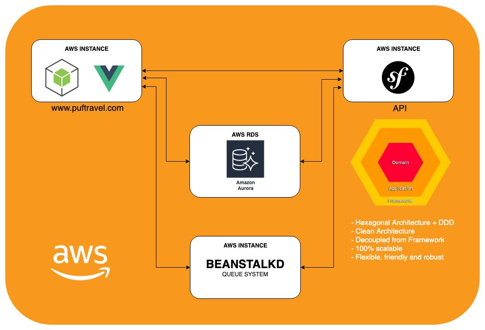

Plataforma Propuesta para PUF Travel
Actualmente se conforma por dos principales proyectos, un proyecto para toda la interfaz WEB y otro para el API. Procederemos a detallar de cada uno lo siguiente:
Tecnología (Technology)
Framework
Buenas prácticas (Best Practices)
Coding Style
Patrones de Diseño (Design Patterns)
Arquitectura de Software (Software Architecture)
Infraestructura (Infrastructure)
Git Flow Development (Flujo de Desarrollo GIT)
WEB
Tecnologías:
- Lenguaje: PHP 7.3.x
- Base de Datos: MySQL 5.7
- Sistema de Colas: Beanstalkd
- Cache: Memcached
- Frontend: Vue.js, Stylus, CSS
Framework:
- NodeJS + Vue.js
Buenas Prácticas:
- Vue.js implementa muy buenas prácticas a la hora de estructurar los directorios.
- Vue.js implementa buenas prácticas en cuanto a el uso de stores, routing y más.
- DRY (Don't Repeat Yourself), evitar duplicidad de codigo.
- KISS (Keep It Simple Stupid), evitar hacer código espaguetti para cosas tan sencillas que pueden hacerce en unas pocas lineas de código.
Coding Style:
- Correcta identación del codigo.
- Cero comentarios donde el codigo es mas que tácito para cualquier programador.
- Evitar dejar codigo comentado que no se utiliza.
Patrones de Diseño (Design Patterns):
- Se utilizan los por defecto del Framework.
Arquitectura de Software (Software Architecture):
- Se utiliza la por defecto del Framework.
Infraestructura (Infrastructure):
- Se utiliza una instancia de AWS para el despliegue del proyecto.
API
Tecnologías:
- Lenguaje: PHP 7.3.x
- Base de Datos: MySQL 5.7
- Sistema de Colas: Beanstalkd
- Cache: Memcached
Framework:
- Symfony 4
Buenas Prácticas:
- Las sugeridas por Symfony en su versión 4.0 en cuanto a convención de nombres, directorios, formularios entre otros.
- DRY (Don't Repeat Yourself), evitar duplicidad de codigo.
- KISS (Keep It Simple Stupid), evitar hacer código espaguetti para cosas tan sencillas que pueden hacerce en unas pocas lineas de código.
Coding Style:
- Por defecto Symfony implementa los estándares PSR-1, PSR-2 y PSR-4
Patrones de Diseño (Design Patterns):
- Aplicar los 5 principios de SOLID.
- Facade
- Factory Method
- Port and Adapters
Arquitectura de Software (Software Architecture):
- Hexagonal Architecture
- Domain Driven Design (DDD)
- CQRS (Command Query Responsability Segregation)
Infraestructura (Infrastructure):
- Se utiliza una instancia de AWS para el despliegue del proyecto.
Diagrama de la Infrastructura y Arquitectura de Software Propuesta

Git Flow Development (Flujo de Desarrollo GIT):
- Rama master para producción
- Rama staging para Testing
- Rama dev para Desarrollo
- Cada funcionalidad se debe implementar desde una rama nueva la cual debe partir de la rama dev.
- Al finalizar una funcionalidad se debe hacer Pull Request (PR) sobre la rama dev
- Cuando se va a pasar a producción se debe hacer un release versión con la cognotación vX.Y.Z, ejemplo: v1.0.0
- La regla de versionado para las releases sera: "Z" es la versión de REVISION la cual se incrementa cuando se añaden correcciones o bug fixes compatibles con una versión de release publicada, "Y" es la versión MINOR la cual se incrementa cuando se agrega una nueva funcionalidad compatible con la versión de release publicada y "X" es la versión MAYOR la cual se incrementa cuando se incorporan nuevas funcionalidades que no existen o que no son compatibles con la versión de release publicada.
- Los hotfix van sobre la rama master
- La rama staging contiene todo lo de master mas lo nuevo que se va a integrar desde dev, solo se usar para levantar entornos de prueba
Diagrama de Git Flow

Diagrama versionamiento de software